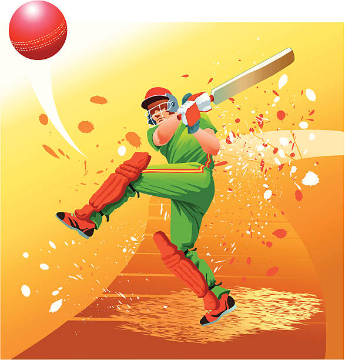
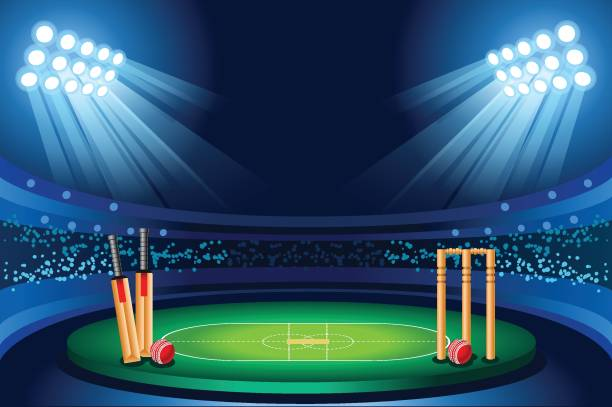
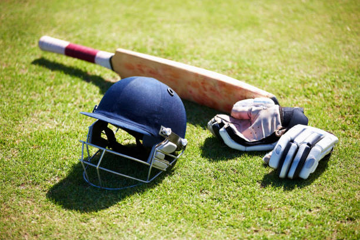

Cricket
Cricket is a bat and ball game played between two teams, 11 players
each, on a field which has a rectangular 22-yard-long pitch in the
centre. The purpose of playing the
game is to score more runs than your opponent team in order to beat them earlier.
A Cricket match is divided into periods called innings. During the innings one team bats while the other fields.
All 11 players on the fielding team are on the pitch at the same
time however only two batsmen are the field at any one time.
Team captains toss a coin to decide who should bat first. Cricket
fields tend to be oval in shape. The end which is marked off is
called the boundary, with the rectangle “pitch” in the centre. At
each end of the pitch are the wickets, 22 yards apart.

Stadiums
Stadiums of the game Cricket are refered as a locality in which the
game is to be played. this consists of cricket feild at the middlel
located inside the stadiums. Around the fields, the places are
assigned for the teams, staffs, and the spectators.
The dimensions of a Cricket pitch are 20.12m long(from stump to
stump) plus a minimum of 1.22m behind the stumps to accommodate the
return crease and bowler approach area.
Some of the international cricket stadiums in India - Eden Gardens,
M.Chinnaswamy Stadium, Wankhede Stadium, Narendra Modi Stadium,
Rajiv Gandhi International Cricket Stadium, Holkar Stadium, M. A.
Chidambaram Stadium, Sawai Mansingh Stadium......

Equipments
Equipments in any games and sports plays a vital role because
without equipments, we are unable to play our respective game. It
also helps us to play the respective games safely, without getting
injured.
As good as the quality of equipments, provides betterment to the
sportsperson. So, if we include best qualities of equipments in our
game, then this will provide lots of self-confidence to the
sportsperson.
Some of the equipments are - Cricket Bails, Cricket Ball, Cricket
Bat, Boundary Rope, Cricket Sight Screen, Cricket Stumps, Arms
Guard, Chest Guard, Helmet, Elbow Guard, Gloves, Jockstrap, Leg
Pads, Thigh Guard, Wicket Keeper Gloves, T- Shirt, Sports
Shoes......